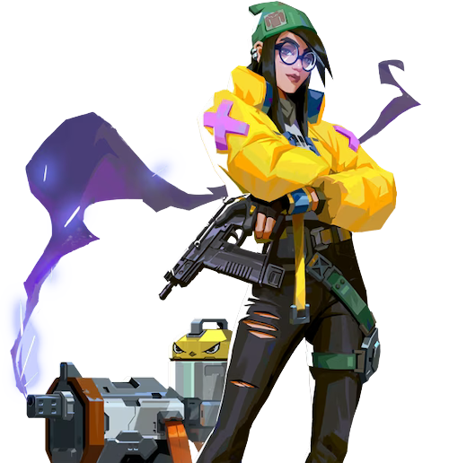

キルジョイ

国籍: ドイツ
ロール: センチネル
キルジョイは設置型のガジェットを駆使して、エリアを制御し敵の進行を妨害するエージェントです。彼女のアビリティは、敵の動きを封じ、チームの安全を確保するのに役立ちます。
公式トレーラー
スキル
| スキル名 | 値段 | 所持上限 | 説明 |
|---|---|---|---|
| ナノスワーム (Q) | 200 | 2個 | スキル使用でナノボットのグレネードを投げる。着地後に起動すると範囲内の敵に継続ダメージを与える。 |
| アラームボット (E) | 200 | 1個 | 敵が近づくと爆発して敵にデバフをかけるボットを設置。デバフを受けた敵は受けるダメージが増加する。 |
| タレット (C) | 無料 | 1個 | 180度の視野で敵を自動的に攻撃するタレットを設置。 |
| ロックダウン (X) - アルティメット | - | 1個 | 広範囲に敵を拘束するデバイスを設置。デバイスが起動するまでに一定時間がかかるが、起動後は範囲内の敵を長時間拘束する。 |
立ち回りとおすすめマップ
攻めの立ち回り
キルジョイはナノスワームやアラームボットを使って敵の進行を遅らせ、タレットでエリアを確保します。ロックダウンを使って敵を一時的に無力化し、サイトを確保するのが効果的です。
守りの立ち回り
守りにおいては、タレットやアラームボットを活用して敵の進行を監視し、ナノスワームで敵をダメージを与えます。ロックダウンを使って敵のラッシュを阻止し、リテイク時に使用するのも有効です。
ガジェットの設置場所
ガジェットを設置する場所は、敵がよく通る場所や角などが効果的です。敵が予想しない場所に設置することで、効果的に敵を無力化できます。
アルティメットの使い方
ロックダウンは広範囲の敵を無力化するため、攻撃・防御のどちらでも有効に使えます。設置場所を工夫し、敵が対処しにくい位置に設置するのがポイントです。